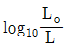
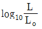
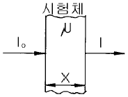
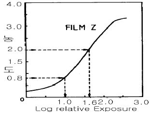

방사선비파괴검사기사(구) (2003-05-25 기출문제)
1과목: 방사선투과시험원리
1. 열형광 선량계(TLD)의 장, 단점에 대하여 설명한 것이다. 틀린 것은?
- 감도가 좋고, 측정 범위가 넓다.
- 소자를 반복하여 사용할 수 있다.
- 방향의존성이 있으며, 에너지 의존성이 크다.
- 판독장치가 필요하고 기록 보존이 쉽다.
(정답률: 알수없음)

2. 다음 초음파탐상검사의 진동자 특성 중 분해능이 뛰어나고 수신효율이 가장 좋은 것은?
- 수정
- 지르콘티탄산납계
- 황산리튬
- 티탄산바륨
(정답률: 알수없음)
3. 방사선투과검사시 연박증감지에 관한 사항 중 틀린 것은?
- 필름감광도를 증가
- 피사체 산란선 제거효과
- 선질이 높을수록 연박두께가 얇아지는 경향이 있다.
- 후면 증감지의 연박두께는 두꺼울수록 좋다.
(정답률: 알수없음)
4. 방사선 투과사진을 촬영할 때 산란선을 방지하기 위해 다음과 같은 조치를 하였다. 산란선 방지에 도움이 되지 않는 것은?
- X선 관구에 납으로 된 조리개를 설치
- 필름 뒷면에 엷은 합판을 부착
- 필름 카세트 뒷면에 두께 2∼3㎜의 납판을 부착
- 연박증감지를 사용
(정답률: 알수없음)
5. 방사선투과사진의 농도(D)는 입사광의 강도를 Lo, 투과광의 강도를 L이라 할 때 어떻게 표시되는가?


- ln(Lo - L)
- ln(L - Lo)
(정답률: 알수없음)
6. 필라멘트로 부터 양극으로 가속되어 온 전자가 원자핵 주위에 있는 궤도전자와 충돌되어 발생된 X선을 무엇이라 부르는가?
- 형광 X선
- 발광 X선
- 연속 X선
- 특성 X선
(정답률: 알수없음)
7. 연(납)박 증감지를 사용한 방사선투과시험에서 Film을 감광시키는데 다음 중 실질적인 역할을 하는 것은?
- X선
- γ선
- 전자
- 양자
(정답률: 알수없음)
8. 다음 중 방사선투과시험으로 평가하기 곤란한 경우는?
- 두께의 변화
- 개재물의 분포상태
- 조립품의 내부구조
- 잔류응력
(정답률: 알수없음)
9. 필름 뺏지로 개인 방사선량율을 측정할 때 선량의 최저치는 통상 몇 mSv인가?
- 0.1
- 1.0
- 10
- 30
(정답률: 알수없음)
10. 빛의 투과율이 5%인 방사선투과사진의 농도는 얼마인가? (단, log2는 약 0.3이다.)
- 0.3
- 1.3
- 2.0
- 2.6
(정답률: 알수없음)
11. 방사선투과 촬영시 카세트 후면에 납글자 B자를 부착하는 이유는?
- 전방 산란을 점검하기 위하여
- 측방 산란을 점검하기 위하여
- 후방 산란을 점검하기 위하여
- 콘트라스트를 점검하기 위하여
(정답률: 알수없음)
12. 필름 콘트라스트에 대한 설명으로 옳은 것은?
- 속도가 빠른 필름일수록 크다.
- 감마치가 높을수록 크다.
- 감마치와 무관하게 일정하다.
- 피사체 콘트라스트가 클수록 크다.
(정답률: 알수없음)
13. 비파괴검사가 다른 측정이나 시험법과 구별되는 인자로서 그 설명이 가장 알맞는 것은?
- 비파괴검사는 간접 시험법이라는 점
- 비파괴검사는 치수, 외관 만의 측정이라는 점
- 비파괴검사는 불연속의 검출, 평가, 위치측정에 전자장비만을 사용한다는 점
- 비파괴검사는 제품의 대량생산을 대변한다는 점
(정답률: 알수없음)
14. 그림과 같이 투과된 방사선의 강도(I)가 입사된 방사선 강도(Io)의 반이 되기 위한 시험체의 두께(X)는? (단, μ는 시험체의 흡수계수)

- 3.96/μ
- 0.396/μ
- 6.93/μ
- 0.693/μ
(정답률: 알수없음)
15. 감마선의 등가계수에 관한 설명으로 틀린 것은?
- 기본적으로 X선에 대해 관련된 동일한 사항이 감마선 흡수에도 적용한다.
- 단일에너지 방사성동위원소라도 선원은 시편의 크기, 모양 및 조성에 영향을 받는다.
- 원자번호가 아주 큰 차가 있는 두 재질에 대한 흡수는 그 밀도에 비례관계가 성립하지 않는다.
- Ir-192와 같이 넓은 에너지 분포를 갖고 방출하는 경우에는 X선과 아주 상이하다.
(정답률: 알수없음)
16. 다음 중 γ선과 물질과의 상호작용이 아닌 것은?
- 광전효과
- 제동복사
- 컴프턴 산란
- 전자쌍생성
(정답률: 알수없음)
17. Ir-192 100Ci의 방사성 동위원소가 있다. 이 동위원소가 10반감기가 지난 후에는 처음 강도의 몇 %가 되겠는가?
- 약 0.1%
- 약 0.2%
- 약 1%
- 약 2%
(정답률: 알수없음)
18. 다음 중 γ선원을 사용하여 검출하기 가장 어려운 결함은?
- 모래박힘(slag inclusion)
- 기공(porosity)
- 루트균열(fine root crack)
- 언더컷(undercut)
(정답률: 알수없음)
19. 방사선투과시험용 필름보관에 관한 설명으로 틀린 것은?
- 현상된 필름은 저장용 봉투를 만드는데 사용된 접착제에 의한 화학오염의 가능성을 방지하기 위해 가능하면 본래의 필름포장함에 넣어 보관한다.
- 각각의 필름이 간지에 쌓여 있더라도 여러 장의 필름을 하나의 봉투에 넣어 보관해선 안된다.
- 필름 보관실의 적정온도는 5℃∼24℃이다.
- 필름 보관실의 습도는 30%∼60%가 적당하다.
(정답률: 알수없음)
20. 투과도계의 식별한계 콘트라스트를 설명한 것으로 틀린 것은?
- 식별한계 콘트라스트는 농도의 상승과 함께 증가한다.
- 식별한계 콘트라스트는 X선 필름의 종류에 따라 다르다.
- 입상성이 좋은 X선 필름이 입상성이 나쁜것보다 식별한계 콘트라스트가 작다.
- 침금상(Wire image)의 폭이 커질수록 식별한계 콘트라스트는 증가한다.
(정답률: 알수없음)
2과목: 방사선투과검사
21. 평판 용접부의 방사선투과검사시 투과도계의 배치에 관한 설명으로 잘못된 것은?
- 관심부위를 방해하지 않도록 한다.
- 사용되는 방사선 빔의 가장자리가 되도록 한다.
- 최대 불선명도가 나타나는 곳에 둔다.
- 시험체의 두께 차이가 큰 경우 유공형 투과도계는 용접부에 걸쳐 놓는다.
(정답률: 알수없음)
22. 정착과정의 중요한 기능으로 알맞는 것은?
- 현상되지 않은 은입자를 제거한다.
- 브롬화은(AgBr)중 은염을 검게하는 역할을 한다.
- 현상용액에서 묻은 알칼리를 중화시킨다.
- 브롬을 제거한다.
(정답률: 알수없음)
23. 방사선 투과사진의 실제 감도는 어느 것으로 정의될 수 있는가?
- 방사선원의 농축도
- 두 지점간의 농도 차이
- 투과사진상에서 측정 가능한 기하학적 불선명도
- 투과사진에 나타난 최소의 두께 차이와 시험체 두께와의 비율
(정답률: 알수없음)
24. 납스크린의 용도 설명으로 틀린 것은?
- 필름 보호
- 노출시간 단축
- 산란선 흡수
- 현상시간 단축
(정답률: 알수없음)
25. 필름과 방사선원의 거리가 1m 였을 때 노출시간 100초로 좋은 사진을 얻었다. 필름과 방사선원의 거리를 1.5m로 변경했을 경우 동일한 질의 사진을 얻으려면 노출시간을 얼마로 하면 되는가?
- 150초
- 225초
- 250초
- 280초
(정답률: 알수없음)
26. 공업용 X선 발생장치에 관한 설명중 맞는 것은?
- 방사선 빔은 필라멘트로부터 시작되기 때문에 불선명도를 줄이기 위해 필라멘트의 크기는 작을수록 좋다.
- 냉각제로 쓰이는 물질은 유전성이 낮은 물질이 사용된다.
- 중심축으로부터 이탈된 X선빔을 제거하고, 전기적으로 차폐하는 목적으로 후드(hood)를 사용한다.
- 전자빔에 대한 표적의 방향은 초점의 크기와 모양에 영향을 받으며, 최대강도는 20°정도에서 나타난다.
(정답률: 알수없음)
27. 판형 투과도계의 상질수준(quality level) 2-1T의 설명 중 올바른 것은?
- T는 투과두께이다.
- 감도는 1.4% 정도이다.
- 투과도계 두께는 투과 두께의 1 % 정도이다.
- 최소 식별 구멍은 1T hole 이다.
(정답률: 알수없음)
28. 다음 중 방사선투과사진의 명료도(definition)를 좋게 하기 위한 방법에 속하지 않는 것은?
- 형광증감지를 사용한다.
- 산란 방사선을 방지한다.
- 선원의 크기가 작은 것을 사용한다.
- 선원-필름간 거리를 가급적 크게 한다.
(정답률: 알수없음)
29. ASTM 투과도계 사용시 주의사항이 아닌 것은?
- 투과도계는 시험하는 시험편과 재질이 동일한 것을 원칙으로 한다.
- 투과도계 두께는 시험편 두께의 1%이하이어야 한다.
- 투과도계 직경은 투과도계 두께의 4배, 2배 및 1배이며 최소 직경은 각각 0.04, 0.02, 0.01 인치이다.
- 지시번호는 투과도계의 납글자로 구성되며 지시번호는 투과도계가 사용되는 시험편의 최소 두께를 나타낸다.
(정답률: 알수없음)
30. 시료 분석용 장치의 경우 특성 X-선을 이용하기 위한 표적재질이 아닌 것은?
- 구리(Cu)
- 철(Fe)
- 코발트(Co)
- 베릴륨(Be)
(정답률: 알수없음)
31. 다음 중 의사지시나 인공결함을 확인하기 위한 가장 효과적인 방법은?
- 미소 초점 사용
- 초과 노출 및 초과 현상
- 이중 필름 사용
- 저온 현상
(정답률: 알수없음)
32. 방사선투과사진의 식별도를 좋게하기 위한 조건이 아닌 것은?
- 에너지를 크게 한다.
- 선원의 초점이 작은 것을 사용한다.
- 사진 콘트라스트를 크게 한다.
- 피사체 콘트라스트를 크게 한다.
(정답률: 알수없음)
33. 다음 방사선 검출 장치중 Radioscopy에 사용되는 것은?
- GM 계수관
- 반도체 검출기
- 필름
- 형광스크린
(정답률: 알수없음)
34. 방사선투과사진의 농도가 너무 높을 때 농도를 저하시키는 감력제로 사용하는 것은?
- 적혈염[K3Fe(CN)6]
- 탄산칼륨[K2CO3]
- 수산화나트륨[NaOH]
- 중크롬산칼륨[K2Cr2O7]
(정답률: 알수없음)
35. 대부분의 공업용 X선 발생장치의 표적물질로 텅스텐이 사용되고 있는데 그 외 어느 재질이 공업용 X선관의 표적물질로 사용되는가?
- 베릴륨(Berylium)
- 금(Gold)
- 아연(Zn)
- 게르마늄(Germanium)
(정답률: 알수없음)
36. 맞대기 용접부를 방사선투과 촬영한 투과사진에서 최고 및 최저 농도에 대한 설명이 바르게 기술된 것은?
- 최고농도는 중앙 용접부의 가장 높은 값을 나타낸다.
- 최저농도는 중앙 용접부의 가장 낮은 값을 나타낸다.
- 최고농도는 좌우 양끝단부의 농도중 가장 높은 값을 나타낸다.
- 최저농도는 좌우 양끝단부의 농도중 가장 낮은 값을 나타낸다.
(정답률: 알수없음)
37. 다음 중 step wedge를 이용하여 측정할 수 없는 것은?
- 시험체의 반가층
- 방사선원의 크기
- 시험체의 선형 흡수계수
- 방사선원의 에너지 특징
(정답률: 알수없음)
38. 감마선 조사장비의 차폐재료로서 주로 사용되며 차폐효과가 가장 큰 재료는?
- 우라늄
- 납
- 텅스텐
- 구리
(정답률: 알수없음)
39. 얇은 스텐레스강 용접부의 촬영에서 나타나는 mottling과 같은 비 정상적인 상의 발생원인은?
- 용접부의 불연속부 때문에
- 용접부 결정립이 크기 때문에
- 용접부 결정립이 미세하기 때문에
- 용접의 물결무늬가 발생되기 때문에
(정답률: 알수없음)
40. 어떤 시험편을 12MAM(㎃/분)의 노출시간으로 필름의 농도가 0.8 이였다. 농도를 2.0 으로 하고자 할 때 요구되는 노출 시간은?

- 24MAM
- 30MAM
- 50MAM
- 60MAM
(정답률: 알수없음)
3과목: 방사선안전관리,관련규격및컴퓨터활용
41. 다음 중 서로의 관계가 틀린 것은?
- 1Sv = 100rem
- 1eV = 1.6x10-6erg
- 1Ci = 3.7x1010d㎰
- 1dpm = 4.55x10-7μCi
(정답률: 알수없음)
42. ASME code에 따라 관용접부를 이중벽단면 촬영법으로 촬영하고자 할 때 전용접부를 검사하고자 한다면 최소한 몇 회의 촬영이 요구되는가?
- 2회
- 3회
- 4회
- 6회
(정답률: 알수없음)
43. 다음 설명 중 방사성동위원소등을 이동사용 하는 경우 기술기준에 적합하지 않은 것은?
- 야간 방사선작업을 수행하는 경우 필요한 조명기구를 확보할 것
- 방사선작업을 종료하는 경우 개인피폭 선량계를 확인 할 것
- 방사선발생장치를 사용하는 경우 콜리메터를 장착하고 사용할 것
- 방사선작업은 2인 이상을 1조로 편성하여 작업을 수행 할 것
(정답률: 알수없음)
44. ASME Sec.V에서 적용되고 있지 않은 비파괴검사법은?
- 육안검사에 관한 방법
- 음향방출검사에 관한 방법
- 와전류탐상검사에 관한 방법
- 중성자 선원을 이용한 방사선투과검사에 관한 방법
(정답률: 알수없음)
45. 인터넷의 개념과 관련이 없는 것은?
- 수많은 사람이나 기관과 연결할 수 있는 개방구조이다.
- 독자적인 주소를 할당받는다.
- 전세계 통신망들이 합쳐진 네트워크의 네트워크이다.
- 단일 운영체제로 연결된 네트워크 통신망이다.
(정답률: 알수없음)
46. KS B 0845에 따라 흠 상을 분류할 때 균열의 분류는?
- 2류로 한다.
- 흠길이에 따라 달라진다.
- 3류로 한다.
- 4류로 한다.
(정답률: 알수없음)
47. 다음의 서버에 대한 설명이 잘못된 것은?
- SMTP 서버 : 메일러로부터 전자우편을 받아서 상대방의 SMTP 서버로 보낸다.
- FTP 서버 : 파일의 송수신을 지원한다.
- Proxy 서버 : 특정 조식의 랜과 외부 네트워크 사이에서 방화벽 역할을 수행하며, 동시에 여러 외부 서버의 데이터를 대신 받아주는 역할을 한다.
- Gopher 서버 : 원격 시스템 접속을 지원한다.
(정답률: 알수없음)
48. KS B 0845에 의해 모재 두께가 19㎜이고 직경이 20㎝인 철강관을 이중벽 단상(Double wall-single image) 방법으로 방사선투과검사를 하려 한다. 이 때 일반형의 F형 투과도계의 사용 방법은?
- 최소 식별 선지름을 포함하는 2개의 투과도계를 필름측에 놓는다.
- 최소 식별 선지름을 포함하는 1개의 투과도계를 필름측에 놓는다.
- 최소 식별 선지름을 포함하는 2개의 투과도계를 선원측에 놓는다.
- 최소 식별 선지름을 포함하는 1개의 투과도계를 선원측에 놓는다.
(정답률: 알수없음)
49. 윈도우 운영체제에서 디스크의 단편화를 제거하기 위한 목적의 프로그램은?
- 디스크 검사
- 디스크 정리
- 디스크 조각모음
- 디스크 공간 늘림
(정답률: 알수없음)
50. Ir-192 20Ci가 149일이 지난 후 activity는 약 얼마인가?
- 1.85×1010Bq
- 1.85×1011Bq
- 3.7×1012Bq
- 3.7×1013Bq
(정답률: 알수없음)
51. 인터넷 상에서 사용자가 원하는 키워드를 입력하여 사이트를 찾고자 할 때 사용할 프로그램은?
- 즐겨찾기
- 검색엔진
- 목록보기
- 인터넷옵션
(정답률: 알수없음)
52. API(미국석유협회) 1104 규격에서는 사용하지 않는 필름(Unexposed Film)의 감광정도를 기준치 이하로 제한하고 있다. 이 규격에서 규정한 기준치는 얼마 이하인가?
- 0.⑤ H&D
- 0.10 H&D
- 0.20 H&D
- 0.30 H&D
(정답률: 알수없음)
53. KS D 0242에 의한 결함등급 분류 중 잘못된 것은?
- 텅스텐 혼입은 결함점수를 구하고 등급분류표에 의해 분류한다.
- 균열은 4급에 해당된다.
- 용입부족은 항상 3급이 된다.
- 융합부족은 그 길이를 환산하여 등급분류표에 의해 분류한다.
(정답률: 알수없음)
54. 방사성 동위원소의 사용허가 신청시 첨부되는 서류로 맞는 조합은?
- 이동시설, 분배시설, 환기시설 및 폐기시설의 도면
- 방사성물질 이동차량, 차폐벽 기타의 차폐물이 규정기준에 맞는지 확인할 수 있는 설명서
- 배수 설비 및 폐기 설비가 규정에 정한 기준에 맞는지 확인할 수 있는 도면
- 방사선안전관리자의 재직 서류, 사업자등록증 사본
(정답률: 알수없음)
55. 전자우편을 이용할 때 사용자의 컴퓨터에서 다른 시스템에 도착한 전자우편을 볼 수 있도록 하는 프로토콜은?
- POP3
- SMTP
- NMTP
- HTTP
(정답률: 알수없음)
56. ASME Sec.Ⅴ, Art.22(Radiographic Standards) SE-1025에는 Hole-type의 투과도계에 대한 규격을 규정하고 있다. 투과도계의 Quality Level이 1-2T 일 경우에는 투과도계식별도가 몇 %인가?
- 1.0 %
- 1.4 %
- 2.0 %
- 2.8 %
(정답률: 알수없음)
57. 다음 중 외부 방사선에 대한 3가지 기본방호 원칙으로 합당하지 않은 것은?
- 방사선 작업시간을 단축한다.
- 방사선 측정기로 수시 체크하면서 작업한다.
- 방사선원으로 부터의 거리를 될 수 있으면 멀리한다.
- 방사선원과의 사이에 차폐체를 놓는다.
(정답률: 알수없음)
58. KS B 0845에 규정된 25형 계조계의 두께는 4.0mm이다. 이 때 두께의 치수 허용차는 어떻게 규정하고 있는가?
- ± 1%
- ± 5%
- ± 10%
- ± 15%
(정답률: 알수없음)
59. 다음 중 고준위의 비밀봉된 방사성물질을 취급하는 실험실에서 필요치 않은 것은?
- TLD 뱃지
- 방사선 감시시설
- 출입관리
- 선원의 누설시험
(정답률: 알수없음)
60. ASME Sec.Ⅴ, Art.22(Radiographic standards)의 SE-94에 따른 일반적인 방사선투과검사시에 Co-60의 방사성동위원소를 사용하여 촬영할 때 최소한 두께가 얼마 이상인 연박증감지를 사용하여야 하는가?
- 0.002인치(0.⑤mm)
- 0.0⑤인치(0.13mm)
- 0.01인치(0.25mm)
- 0.02인치(0.5mm)
(정답률: 알수없음)
4과목: 금속재료학
61. Fe3C의 금속간 화합물에 있어서의 탄소의 원자비는?
- 25%
- 40%
- 60%
- 85%
(정답률: 알수없음)
62. 귀금속에 속하지 않는 것은?
- 철
- 금
- 은
- 백금
(정답률: 알수없음)
63. 피검면의 상황을 셀루로이드피막에 옮겨서 이것을 현미경으로 검사하는 방법은?
- EDT 법
- IMPULES 법
- UT - NDT 법
- SUMP 법
(정답률: 알수없음)
64. 활자(Type metal)합금은?
- Cu-Sb-Zr
- Fe-Zn-Sb
- Pb-Sb-Sn
- Al-Se-Zn
(정답률: 알수없음)
65. 와이(Y)합금을 올바르게 설명한 것은?
- Aℓ -Zn 합금에 소량의 Mg 과 Mn을 첨가한 내열성합금
- Aℓ -Cu 합금에 소량의 Mg 과 Ni를 첨가한 내열성합금
- Aℓ -Si 합금에 소량의 Mg 과 Pb을 첨가한 내열성합금
- Aℓ -Fe 합금에 소량의 Mg 과 Sn을 첨가한 내열성합금
(정답률: 알수없음)
66. 석출경화형 스테인리스강인 것은?
- SS 형
- RS 형
- EF 형
- PH 형
(정답률: 알수없음)
67. 고력황동의 조직으로 맞는 것은?
- δ + α
- α + σ
- α + β
- β + γ
(정답률: 알수없음)
68. 자석강이 아닌 것은?
- NKS강
- Koster강
- MK강
- Vanity강
(정답률: 알수없음)
69. 탄소강에서 상온취성(cold shortness)의 원인이 되는 원소는?
- 황(S)
- 인(P)
- 규소(Si)
- 망간(Mn)
(정답률: 알수없음)
70. 열전대로 사용되는 Alumel 이란 어느 계통의 합금인가?
- Ni-Aℓ -Fe 합금
- Aℓ -Cr-Co 합금
- Ni-Mg -Cu 합금
- Aℓ -Mn-Pb 합금
(정답률: 알수없음)
71. 주물용 Aℓ 청동에 대한 설명 중 틀린 것은?
- 고력황동을 사용해서 만든 프로펠러 보다 중량을 10∼20% 가볍게 할 수 있다.
- 내해수성이 좋아 대형 프로펠러를 만들수 있다.
- 경도, 내마모성이 나쁘다.
- 화학 공업장치 분야에 사용된다.
(정답률: 알수없음)
72. Silumin의 개량 처리법에 있어서 미량의 Na 첨가에 대한 설명 중 가장 옳은 것은?
- 과냉현상과 결정성장의 저지에 의한다.
- 융체화 처리에 따른 공공(vacancy)의 형성에 의한다.
- 풀림에 따른 응고핵발생수의 증가에 의한다.
- 풀림 처리에 따른 결정립성장에 의한다.
(정답률: 알수없음)
73. Ti 제련시 사염화티타늄(TiCl4)을 환원하여 스폰지(sponge)티탄을 얻는데 사용하는 환원제는?
- Aℓ
- Mg
- Cu
- Si
(정답률: 알수없음)
74. 서브 제로(sub-zero)에 대한 설명 중 맞지 않는 것은?
- 0℃이하의 온도에서 냉각시키는 조작이다.
- 마텐자이트변태를 중지시키기 위한 것이다.
- 마텐자이트변태를 진행시키기 위한 것이다.
- 심냉처리라고도 한다.
(정답률: 알수없음)
75. 열처리 목적에 적합하지 않는 것은?
- 조직을 연화시키거나 기계가공에 적합한상태로 한다.
- 조직을 조대화시키고 방향성을 크게하며 편석을 많게한다.
- 냉간가공 후 나쁜 영향을 제거한다.
- 조직을 안정화시키고 내식성을 개선시킨다.
(정답률: 알수없음)
76. 델타 메탈(delta metal)의 설명이 틀린 것은?
- 주물이나 단조재로 사용되며 고온가공성이 양호하다.
- 6:4 황동에 1% 내외의 Fe 가 포함된 것이다.
- Cu 54∼58%, Sn 40∼43%, Mg 1% 이내의 합금이다.
- 내식성이 우수하므로 선박, 광산, 수력기계, 화학기계 볼트 너트 등에 사용된다.
(정답률: 알수없음)
77. 아연의 성질을 올바르게 설명한 것은?
- 주조상태에서는 조대결정이 되므로 연신이 낮고 취약하여 상온가공이 어렵다.
- 체심입방격자이며 고온에서 증기압이 낮다.
- 건조한 공기중에서는 산화가 잘되며 산, 알칼리에 강하다.
- Fe가 0.008% 이상이 되면 연질의 FeZn7상이 나타나 인성과 인장강도를 증가시킨다.
(정답률: 알수없음)
78. 마우러 조직도(maurer diagram)란?
- 주철에서 C 와 Si 양에 따른 주철의 조직 관계
- 주철에서 C 와 P 양에 따른 주철의 조직 관계
- 주철에서 C 와 Mn 양에 따른 주철의 조직 관계
- 주철에서 C 와 S 양에 따른 주철의 조직 관계
(정답률: 알수없음)
79. 스프링강으로 가장 적당한 조직은?
- 페라이트
- 오스테나이트
- 솔바이트
- 시멘타이트
(정답률: 알수없음)
80. 세라다이징(sherardizing)은 어느 금속을 철강제품의 표면에 확산 피복시킨 것인가?
- Cr
- Aℓ
- Si
- Zn
(정답률: 알수없음)
5과목: 용접일반
81. 아세틸렌 가스에 대한 설명 중 틀린 것은?
- 공기보다 가볍다.
- 순수한 아세틸렌 가스는 무색 기체이다.
- 불순물인 황화수소 등을 포함하고 있어 악취가 난다.
- 물에는 25배정도 용해되어서 용해 아세틸렌으로 만들어 용접에 이용되고 있다.
(정답률: 알수없음)
82. 다음 설명 중 저수소계 용접봉의 특징이 아닌 것은?
- 탄산칼슘(CaCO3), 불화칼슘(CaF2)이 주성분이다.
- 아크에 탄산가스 분위기를 주어 용착금속에 용해되는 수소량을 적게 한다.
- 용착 금속은 기계적성질, 내균열성이 우수하다.
- 아크가 안정되어 작업성이 우수하다.
(정답률: 알수없음)
83. 탄산가스 용접시 와이어 돌출길이가 적당해야 용접이 잘된다. 용접전류 200[A] 미만일 때 다음 중 몇 mm 정도면 적당한가?
- 5 ∼ 7
- 10 ∼ 15
- 20 ∼ 25
- 25 ∼ 30
(정답률: 알수없음)
84. 현장에서 많이 사용하고 있는 일반적인 용해 아세틸렌에 대한 설명 중 틀린 것은?
- 발생기 아세틸렌에 비하여 불안정하다.
- 일정온도 이상이 되면 산소가 없어도 폭발한다.
- 아세틸렌가스를 아세톤에 용해시킨것이다.
- 발생기 아세틸렌보다 고순도이다.
(정답률: 알수없음)
85. 용접봉 용제(Flux)의 종류에 따라서 용접금속의 충격치가 다르다. 다음중 그 값이 가장 우수하게 나오는 계(系)는 어느 것인가?
- 일미나이트계(ilmenite계)
- 산화철계(酸化鐵系)
- 티타니아계(titania계)
- 저수소계(低水素系)
(정답률: 알수없음)
86. 아크용접 작업에서 아크시간이 7분, 휴식시간이 3분이라할 때 실제 사용률(duty cycle)은 몇 % 가 되는가?
- 30
- 43
- 70
- 93
(정답률: 알수없음)
87. 저수소계, 일미나이트계, 티탄계, 고산화철계 용접봉의 용접성에 대한 설명으로 틀린 것은?
- 내균열성은 피복제의 염기도가 높을수록 양호하다.
- 작업성은 피복제의 염기도가 높을수록 향상된다.
- 내균열성은 저수소계가 가장 좋다.
- 티탄계는 내균열성은 가장 나쁘다.
(정답률: 알수없음)
88. 강 용접물의 용접 변형에 영향을 주는 것이 아닌 것은?
- 용접입열
- 강의 상변태
- 용착량
- 용접결함
(정답률: 알수없음)
89. 용접부를 피닝하는 주목적으로 가장 적합한 것은?
- 모재의 재질을 검사한다.
- 미세한 먼지 등을 털어 낸다.
- 응력을 강하게 하고 변형을 크게 한다.
- 용접부의 잔류응력을 완화하고 변형을 방지한다.
(정답률: 알수없음)
90. 용접기의 1차 입력이 20kVA 이고 전원 전압이 200V일 때, 용접기 1차측 안전 스위치로 가장 적합한 것은?
- 100A
- 10A
- 5A
- 0.1A
(정답률: 알수없음)
91. 플라스마 제트 용접의 특징 중 틀린 것은?
- 열에너지의 집중이 좋다.
- 용접속도가 빠르다.
- 맞대기 용접에서 모재 두께의 제한을 받지 않는다.
- 각종 재료의 용접이 가능하다.
(정답률: 알수없음)
92. 다음 중 아크 특성에 관한 설명 중 틀린 것은?
- 음극구역 전압강하는 양극구역 전압강하보다 많이 일어난다.
- 아크의 특성은 용접봉의 조성, 보호가스 등에 관계없이 일정하다.
- 양극과 음극사이의 아크 간격이 길어지면 전압강하는 증가한다.
- 양극구역 전압강하는 아크 길이 및 전류에 관계없이 거의 일정하다.
(정답률: 알수없음)
93. 다음의 용접법 중에서 전기적인 아크(Arc)에너지를 이용 하는 것은?
- 테르밋 용접
- 플라즈마 용접
- 일렉트로슬래그 용접
- 프로젝션 용접
(정답률: 알수없음)
94. 용접 제품에서 잔류응력의 영향이 아닌 것은?
- 취성파괴의 원인이 된다.
- 응력부식의 원인이 된다.
- 박판 구조물에서는 국부 좌굴을 촉진한다.
- 사용 중에는 변형의 원인은 되지 않는다.
(정답률: 알수없음)
95. 서브머지드 아크용접시 아크의 길이가 길어지면 어떤 현상이 일어나는가?
- 용입이 얕고 폭이 넓어진다.
- 오버랩이 발생한다.
- 용입이 깊어진다.
- 용접비드가 좁아진다.
(정답률: 알수없음)
96. 일반적인 불활성가스 아크용접에 속하지 않는 것은?
- TIG 아크용접
- 알곤 아크용접
- 캐스케이드 아크용접
- MIG 아크용접
(정답률: 알수없음)
97. 피복 금속 아크용접봉의 용융속도에 관한 설명 중 잘못된 것은?
- 아크 전류에 비례한다.
- 아크 전압에 비례한다.
- 같은 전류의 경우 봉의 크기와 무관하다.
- 심선이 같더라도 피복제에 따라 다르다.
(정답률: 알수없음)
98. 산소-아세틸렌 가스 절단시 절단조건으로 설명이 잘못된 것은?
- 모재 중 불연소물이 적을 것
- 슬랙의 유동성이 좋고 쉽게 이탈할 것
- 모재의 연소온도가 용융온도보다 높을 것
- 슬랙의 용융온도가 모재의 용융온도보다 낮을 것
(정답률: 알수없음)
99. 아크전류가 300A 아크전압이 25V 용접속도가 20cm/min인 경우 용접길이 1cm당 발생되는 용접입열은 몇 J/cm인가?
- 20000
- 22500
- 25500
- 30000
(정답률: 알수없음)
100. 가스용접에서 좌(전)진법에 대한 설명으로 틀린 것은?
- 용접속도는 우진법에 비하여 느리다.
- 소요 홈각도는 우진법에 비하여 작다.
- 용접 변형은 우진법에 비하여 크다.
- 열 이용률은 우진법에 비하여 나쁘다.
(정답률: 알수없음)
열형광 선량계(TLD)의 장단점은 다음과 같다.
장점:
- 감도가 좋고, 측정 범위가 넓다.
- 소자를 반복하여 사용할 수 있다.
단점:
- 방향의존성이 있으며, 에너지 의존성이 크다.
- 판독장치가 필요하고 기록 보존이 쉽지 않다.
판독장치가 필요한 이유는 TLD 소자에서 발생한 발광을 측정하여 선량을 계산하기 때문이다. 또한, TLD는 소자 내부에 정보를 저장하므로 기록 보존이 쉽지 않다. 따라서, 측정 결과를 정확하게 기록하고 보존하기 위해서는 전용 판독장치와 기록 시스템이 필요하다.